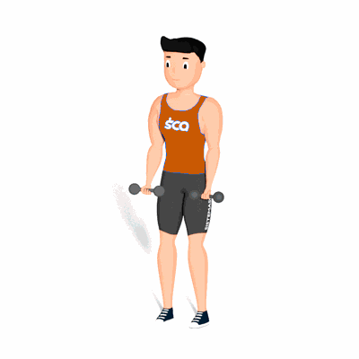

Rosca 21 com Halteres

O exercício tem como o objetivo trabalhar com intensidade o fortalecimento e hipertrofia dos músculos do bíceps.
Ficha Técnica
Tipo: Musculação
Grupo Muscular: Bíceps
Aparelho: Nenhum
Músculos: Nenhum
Como realizar
- Em pé, com as pernas ligeiramente afastadas, palmas das mãos voltadas para frente segurando os halteres com pegada na largura dos quadris;
- No primeiro momento, flexione os braços até que atinjam um ângulo de 90° com a articulação do cotovelo flexionada, relaxe o braço até a posição inicial e repita o movimento por 7 vezes;
- Sem descanso, após o termino da sétima repetição, flexione os cotovelos da metade 90° até a flexão máxima, trazendo a barra para cima em direção ao pescoço. Retorne até o meio e repita por mais 7 vezes;
- Para terminar, você ainda precisa realizar mais 7 repetições de amplitude completa (movimento de rosca direta), atingindo o total de 2
- 1 repetições.
 RC STORE
RC STORE